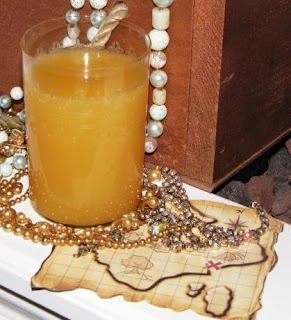

Grog

Grog is a drink made from hot, sweetened water, mixed with a liqueur, usually rum , but also kirsch , cognac , or others. It usually contains some flavoring, for example lemon.
Ingredients
- 1 oz. Lime Juice
- 1 oz. Brown Sugar
- 1 oz. Dark Rum
- 4 oz. Water
- Add the brown sugar to your shaker, add in a splash of warm water (1 oz.) to dissolve the sugar and add lime juice.
- Put in rum, rest of the water and ice.
- Shake.
- Pour over smashed ice.
- Serve.
- Now it do be time to talk like a pirate.